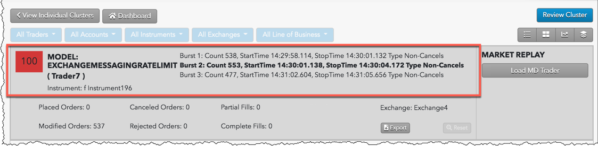

The Exchange Messaging Rate Limit model flags instances where a trader exceeds, or nearly exceeds, the exchange's messaging rate limits. By reviewing instances of excessive messaging rates in a TT Score cluster, compliance officers can identify potentially suspect trading activity on a per trader basis.
Note: This model currently only covers exchanges supported on CME Globex.
TT Score identifies where traders have exceeded the exchange-defined maximum messaging rate limit for at least a three second period throughout the trading day. If one or more three-second "bursts" are identified or if the messaging rate of the burst far exceeds the exchange maximum rate in a cluster, a higher score will be assigned to that Exchange Messaging Rate Limit cluster.
The score assigned to a cluster is based on a sliding scale between 0-100 using a weighted calculation. A score of 75 and above is a good indication that the suspect trading activity occurred.
{% include score-method.html %}The Exchange Messaging Rate Limits cluster scorecard includes metrics that help you identify where excessive messaging rates occurred on a per trader basis.

Included metrics are:
In addition to the scorecard metrics, the Exchange Messaging Rate Limits chart and Audit Trail can help identify intervals of excessive messaging rates.
To inspect an Exchange Messaging Rate Limits cluster in TT Score:
Click on a burst displayed in the chart.
The chart will only highlight instances when the messaging rate exceeded the exchange maximum rate limit for a period of three seconds.
Review the burst metrics highlighted in the metrics scorecard.
In this example, the second messaging rate burst is selected (Burst 2). The messaging rate per second for the interval is shown by the Count metric. The Type metric shows that the excessive messages were "non-cancel" order actions.
To further inspect the trading activity during the selected burst interval, click an order row in the Audit Trail.
Only the order activity for the selected burst is displayed. In this example, the price was continuously requoted for the duration of the three-second interval.